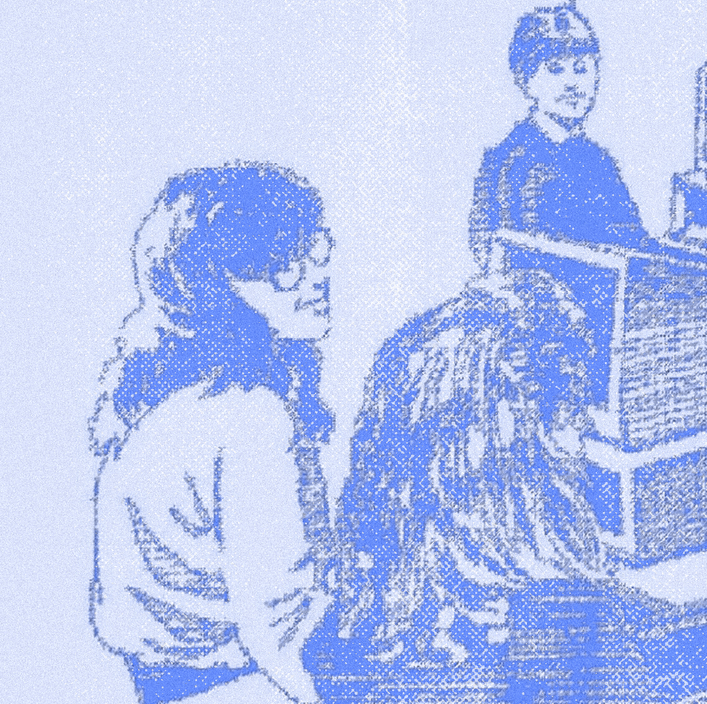

Designer • Maker • Librarian-In-Training
I'm a graphic designer – 2018 graduate of the College for Creative Studies – currently pursuing a Master of Library and Information Science from Wayne State University.
I like to play ridiculous low-budget video games, and solve family history mysteries in my spare time.